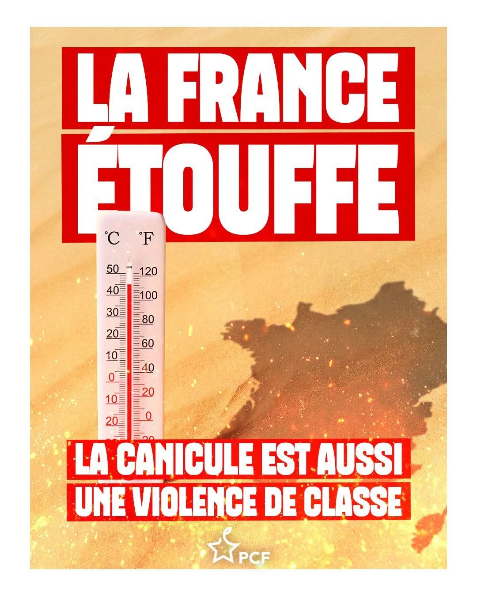

Publication relayée par le PCF 79
Canicule. Le PCF dénonce les inégalités face à la chaleur
Date de mise à jour indiquée par Facebook · 22 juin 2026
Texte de la publication · PCF national
☀️ La canicule est aussi une violence de classe.
La France étouffe. Malgré les alertes des scientifiques qui se succèdent depuis 40 ans, malgré l'urgence climatique désormais visible par toutes et tous, Emmanuel Macron et ses gouvernements ont poursuivi leurs choix mortifères : austérité contre les collectivités, abandon des services publics, recul de la rénovation thermique, soutien aux grands pollueurs, cadeaux au capital et aux plus riches.
🌡 Aujourd'hui, des écoles ferment, des classes dépassent les 35°C, des travailleurs restent exposés à des températures dangereuses, les hôpitaux sont sous tension et des millions de personnes survivent dans des logements transformés en bouillioires thermiques.
Cette situation n'est pas une fatalité.
Tout était connu, tout avait été annoncé. Rien ou si peu a été fait.
🚩 Comme toujours, ce sont les plus modestes qui paient le prix de l'inaction. On ne vit pas la canicule de la même manière dans une passoire thermique, sur un chantier ou dans un quartier populaire que dans un bureau ou un logement climatisé.
Face à l'urgence climatique, l'inaction du pouvoir est devenue criminelle. Il est temps de protéger la population et d'engager les investissements massifs dont le pays a besoin pour faire face au réchauffement climatique.
🔗 Retrouvez le communiqué complet en commentaire.

Sources
PCF national · publication relayée par le PCF 79 · bibliothèque Facebook · AR-0002-FB-00748
À lire aussi · PLF : Barnier sacrifie aussi le climat ! · Le lien d’origine